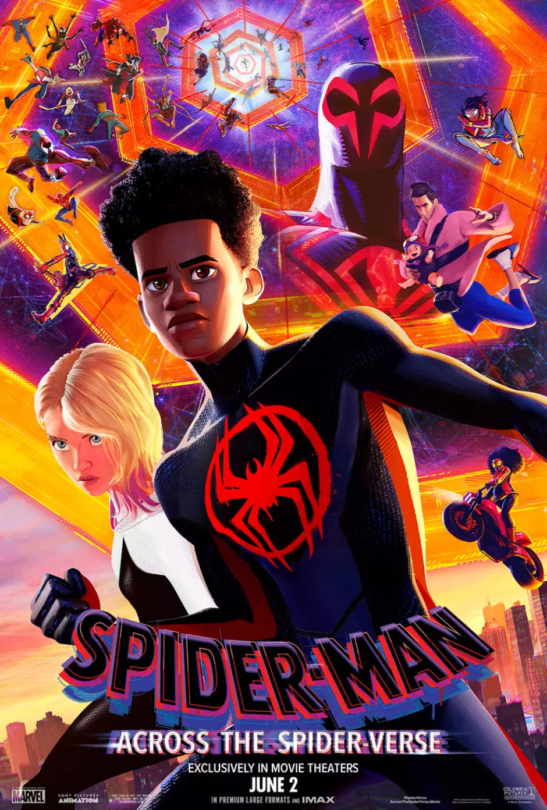

Espetacular!
Multiverso em Movimento
Explore a dinâmica e a diversidade do Aranhaverso.
Sobre o filme
Siopse
Miles Morales está de volta para o próximo capítulo da saga vencedora do Oscar®. Depois de se reunir com Gwen Stacy, o amigão da vizinhança e protetor em tempo integral do Brooklyn é catapultado através do Multiverso, onde ele encontra um time de Pessoas-Aranha que precisam proteger a própria existência. Quando os heróis não conseguem se unir para lidar com uma nova ameaça, Miles se vê dividido e precisa redefinir o que significa ser um herói para que ele consiga salvar as pessoas que mais ama.